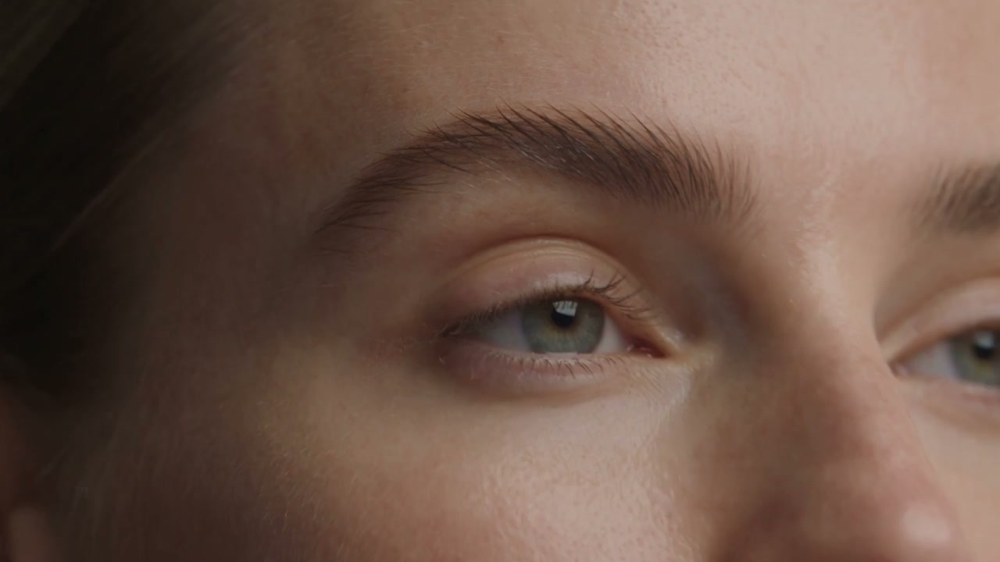
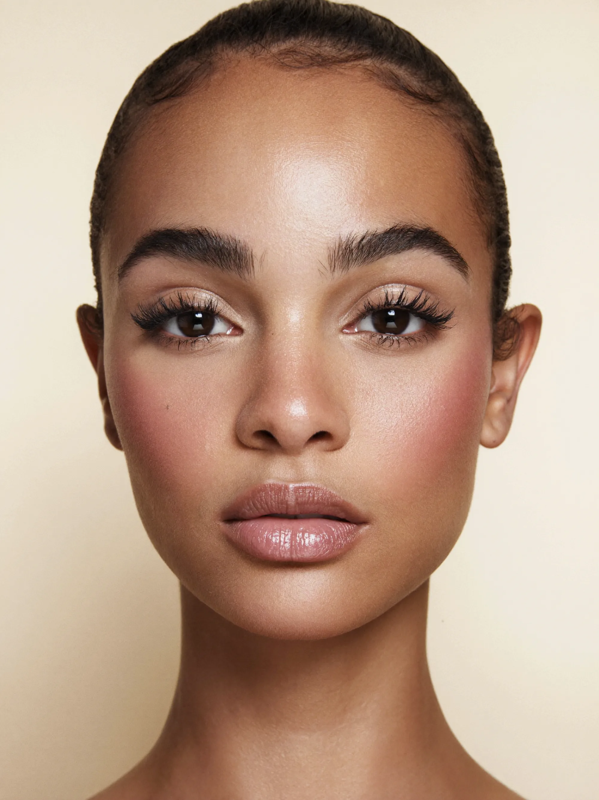
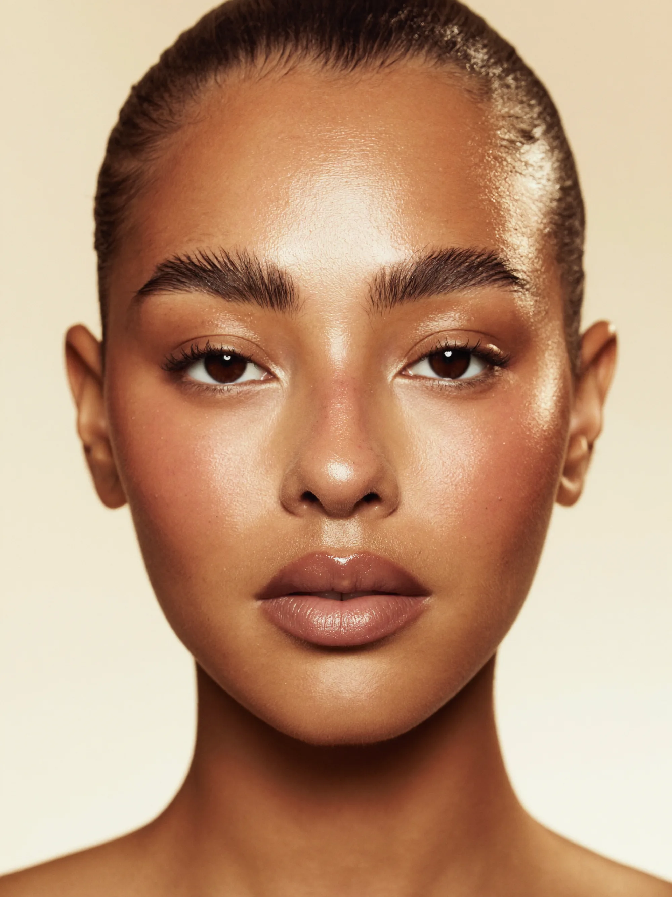
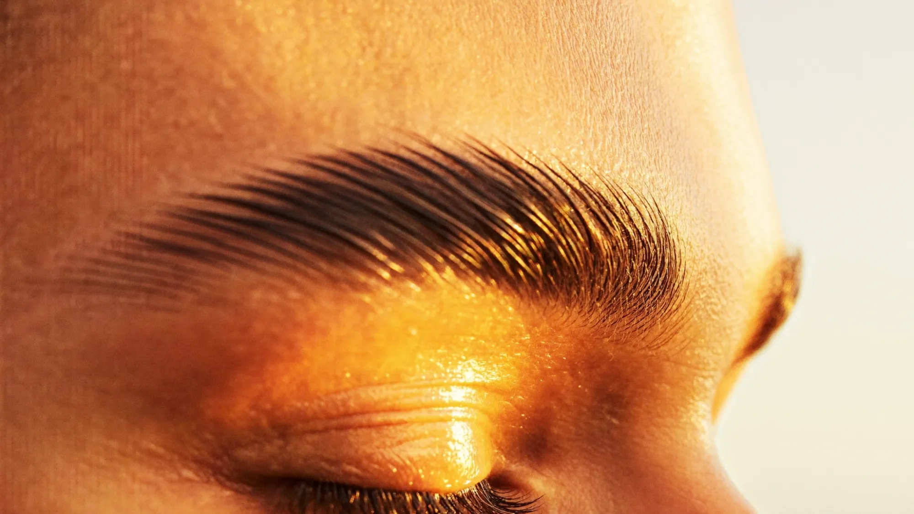
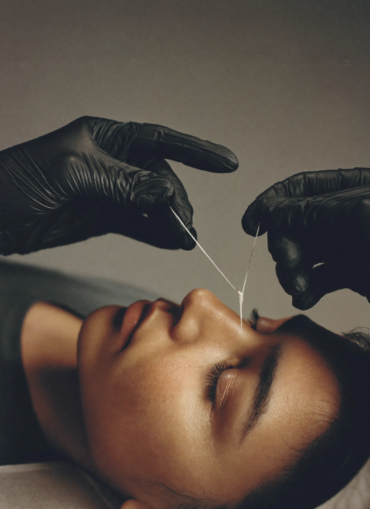

Where the arch
meets timeless
elegance
Every brow is measured against the bone beneath it before a single hair moves. The shape is decided on paper — then kept for six weeks.
Book a mappingDrag to see the shape
Same framing, same light. Nothing drawn on — only what was hiding the line taken away.


Before AfterServices
Each appointment opens with a mapping. Nothing is removed before the shape is agreed.
First visits include the mapping consultation as standard. Patch tests are required forty-eight hours before any tint or lamination.

Every hair has a direction
Growth pattern decides what a brow can become. We read it before we touch it — which hairs carry the arch, and which only look as though they do.
Four tools, one line
Thread for the edge, lamination for direction, tint for depth, restraint for everything else. The finest result is the one nobody can name.
The record
Mapping, threading, lamination and the finished line. Hover to hold it still.

Nine years, one obsession
Maggie trained in threading before lamination existed as a service, in a room where the only tools were a spool of cotton and a ruler. That order never changed: measure, agree the shape, then remove — and only then reach for anything else.
The studio takes one client at a time. No overlap, no rushing a set to fit a diary. A first appointment runs long on purpose, because the mapping is the part that decides the next six weeks.
What clients say
“The first person who measured my face instead of showing me a chart. Six weeks on, they still sit exactly right.”
“I came in after a decade of over-plucking, convinced there was nothing to work with. She proved otherwise.”
“Nobody has asked me what I did. They just ask whether I have been sleeping better. That is the whole point.”
Only the proven results here
Visit the studio
By appointment only. One client at a time, so arrivals are staggered and never overlap.
- Where
- Studio addressAdd the street, city and postcode. A note on the nearest station or parking helps first-time clients.
- Hours
- Tuesday — Saturday10:00 — 18:00. Late appointments on Thursdays. Closed Sunday and Monday.
- Before you come
- Grown out is perfectLeave brows unplucked for two weeks if you can. Patch test forty-eight hours ahead for tint or lamination.
Come as you are
New clients begin with a mapping consultation. Grown out is perfect — there is more to work with.